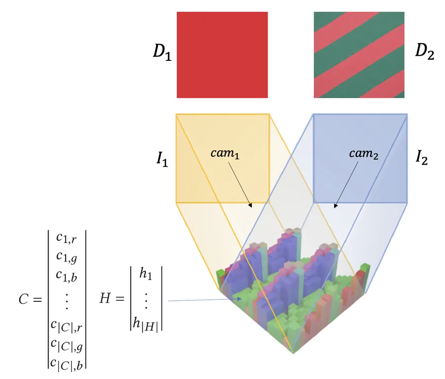
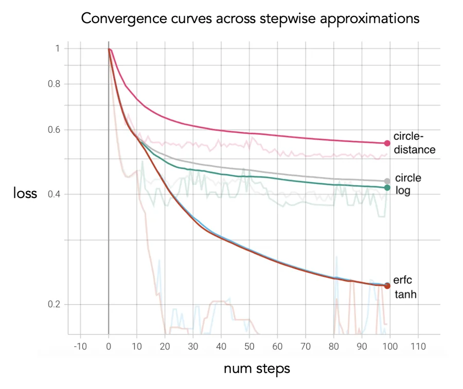
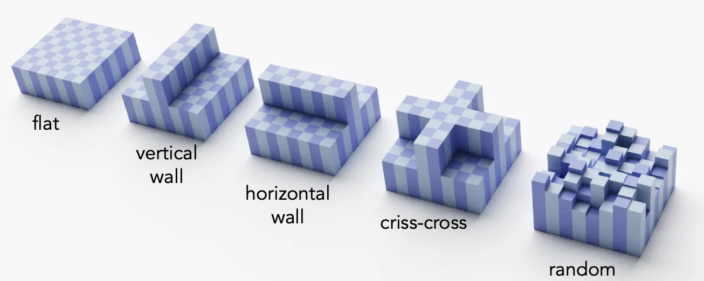
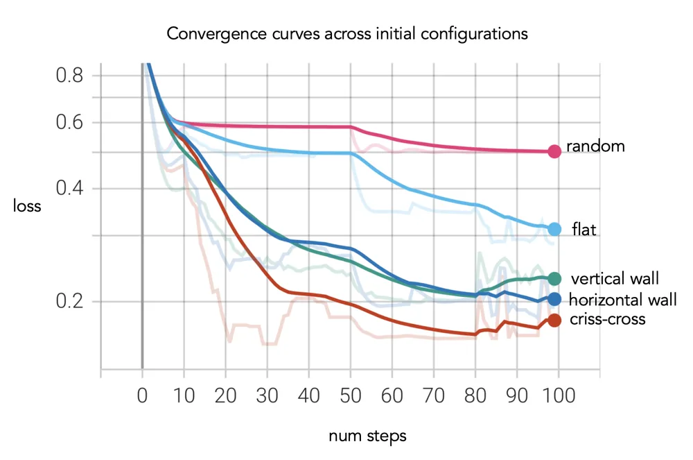
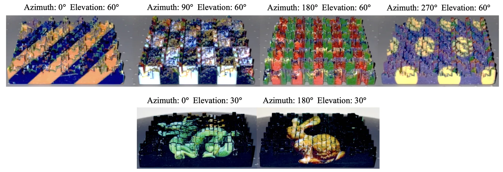
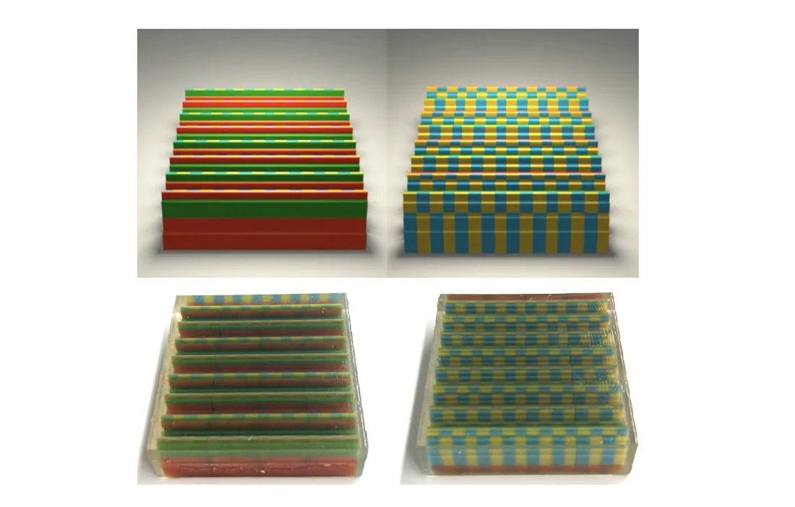
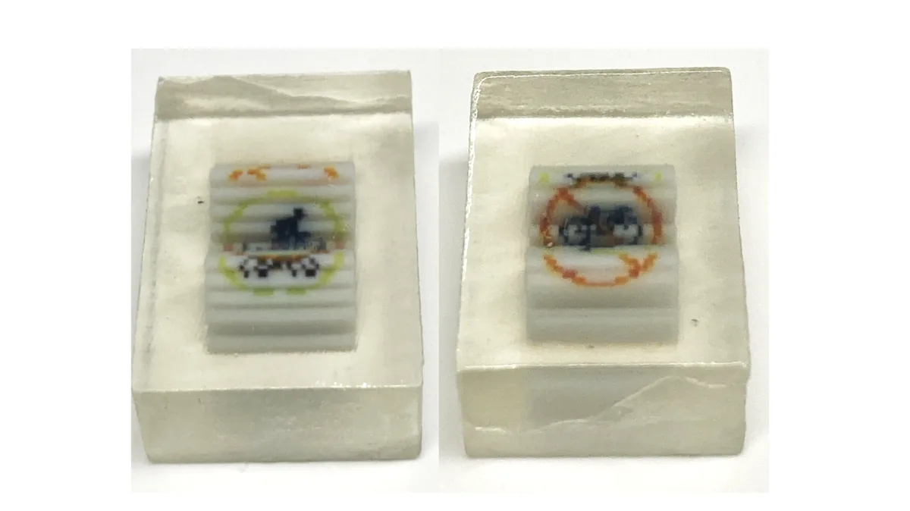
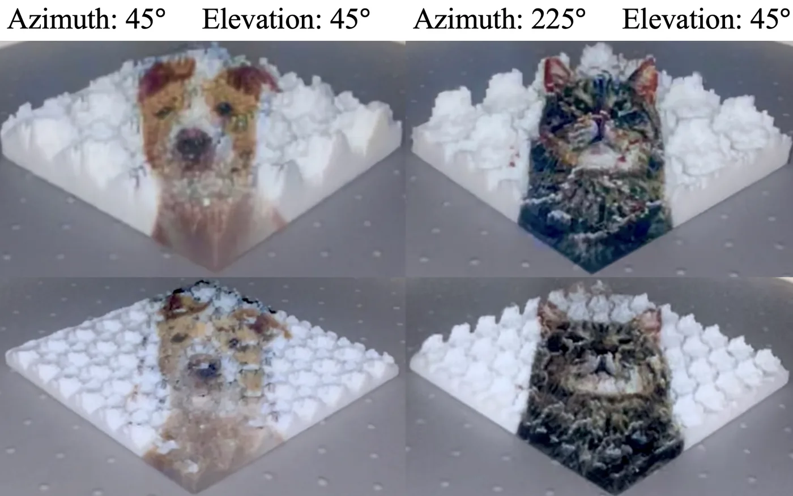
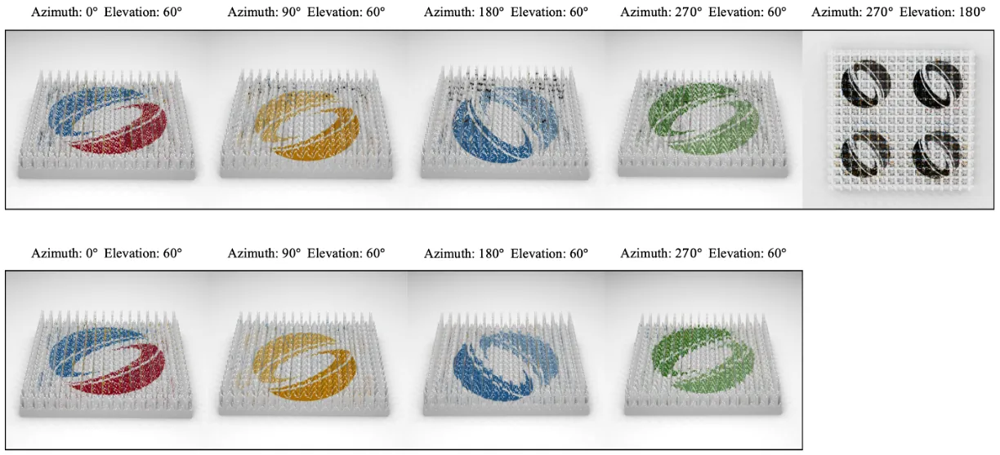
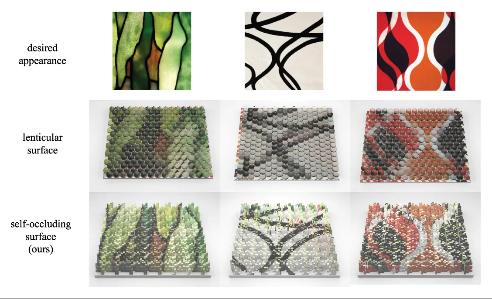

In short
We make 3D-printed surfaces that show a different picture depending on where you look from. The surface is a grid of coloured bars of different heights. From any direction, taller bars hide parts of the bars behind them, so each viewer sees a different mix of colours.
Designing such a surface by hand is hopeless, so we optimize it. The heart of the method is a simple differentiable renderer made for coloured heightfields. It turns each camera ray into a one-dimensional problem with a closed-form colour, so the gradient of the image with respect to every height and colour is cheap to compute. A coarse-to-fine optimizer then adjusts heights and colours until each view matches its desired image. The result is printed directly on a full-colour UV (PolyJet) printer, with no lenses, coatings or extra fabrication steps.
Section 3
A differentiable renderer for heightfields
A heightfield is a matrix of bar heights H and a matrix of bar colours C. It is viewed by a set of orthographic cameras, each given just by a viewing direction. Weak perspective is a good model because the surfaces are shallow. For every camera i there is a desired image Di, and the renderer produces the actual image Ii.
Each pixel is a ray. In the code, pixel centres are spread evenly over a horizontal plane above the unit square, at the current mean height of the surface, and each ray is traced back along the camera direction.

Slicing the heightfield
A 3D ray only ever meets the bars under its shadow on the ground plane. So we project the ray onto the xy plane, list the bars that the projected line crosses in order, and measure how far it travels through each one. That gives a 2D slice: a row of bars with heights hi, colours ci and widths wi, and a 2D ray entering it at height oy.
The code: find_intersections, find_ids_and_lengths, get_2D_ray
rendering.py. pixel and cam are the pixel and camera in the figure above.# traced back from z = 1, as in grad_descent.py
origin = pixel - 20 * cam
ids, widths, ray = rendering.get_2D_ray_info(origin, cam, 8)
print("bars crossed (row, col):", [(int(a), int(b)) for a, b in ids])
print("widths:", np.round(widths, 3))
print("o_y:", round(float(ray.origin.y), 3))
Rendering a single pixel in closed form
Inside a slice, back-trace a line through the far top corner of every bar, parallel to the ray, to the entry line x = 0. It meets that line at height
yi = hi − (dy / dx) · Wi, Wi = w0 + … + wi (1)
where (dx, dy) is the direction of the 2D ray, which points down. For equal widths w, Wi = (i+1)·w. A ray entering at height oy passes over bar i exactly when oy > yi. A bar can be completely hidden by an earlier, taller one, so the boundaries are first made monotonic with a running maximum y′i = max(y0, …, yi). With the step function g, the colour of the ray is then a telescoping sum:
color(p) = c0 + Σi g(oy − y′i) · (ci+1 − ci)
Every bar the ray clears adds the difference to the next colour, so the sum stops at the colour of the first bar that blocks it, or at the last bar of the slice if the ray clears them all.
The two strips on the right are the one-dimensional images of this slice: what all the parallel rays see from this side and from the opposite side. The same bars show different colours from each side, which is the whole effect. With “Show gradients”, the purple arrows show how each height should move to bring the pixel closer to the target colour you pick, using the smooth step’s derivative described below.
The code: Eq. 1, the running maximum, and the colour sum
H and COL are the heights and colours in the slicing figure; ids, widths and ray come from the cell above.width_sums = rendering.get_width_sums(widths)
thetas = rendering.get_backtraced_boundaries(H, ray, width_sums, ids) # Eq. 1
mono = rendering.monotonize_boundary_points(thetas) # running maximum
color = rendering.render_ray_given_boundaries(ray, mono, COL, ids, heaviside_fn="tan")
print("y_i :", np.round(thetas.numpy(), 3))
print("monotonic:", np.round(mono.numpy(), 3))
print("o_y :", round(float(ray.origin.y), 3))
print("pixel colour (RGB):", np.round(color.numpy(), 3))
ray is the slice of the pixel in the figure, as in the cell above.Rendering all pixels, and repeating units
A camera image is all of its rays rendered this way. The slicing only depends on the camera and the bar grid, never on the heights, so the code computes it once per resolution (process_rays) and reuses it at every optimization step. To reproduce a repeated pattern, the heights are optimized for a smaller unit that is tiled across the surface, with occlusion across tiles taken into account. In the code, the height unit is tiled 2×2 while every bar keeps its own colour.
render_camera.n = 16 origins = [np.array([(i + .5) / n, (k + .5) / n, 1.0]) - 20 * cam for i in range(n) for k in range(n)] packs = [rendering.process_rays(origins, cam, 8)] image = rendering.render_camera(H, COL, packs, 1, num_repeats=1, heaviside_fn="tan")[0]
Section 4
Objective function
We minimize the pixel-wise mean squared error between the rendered and desired images of all cameras. With m×m images:
minH,C 1/(m² |CAM|) · Σi Σx,y ( Di(x,y) − forward(cami, H, C)(x,y) )²
The loss values shown on this page are this average per view.
Smooth Heaviside approximations
The step function g has no useful derivative, so heights would never receive a gradient. We replace it by a smooth approximation λ(x, k), where k controls the amount of smoothing. In our ablation, with two opposite cameras at 45° elevation (one solid white, one solid black), the tanh approximation worked best, so it is the default. In the implementation, each approximation is a custom autograd function: the forward pass keeps the exact step, so the rendered image stays exact, and the approximation’s derivative is used in the backward pass.
| approximation | λ(x, k) |
|---|---|
| circle | ½ + ½ · x / (x² + k²)½ |
| circle distance | Bern(½ + ½ · x / (x² + k²)½) |
| erfc | ½ + ½ erf(kx) |
| tanh | ½ + ½ tanh(kx) |
| log | Bern(½ + ½ tanh(kx)) |

happrox.py: the forward pass of every approximation is the exact step.x = torch.tensor([-1.0, -0.1, 0.0, 0.1, 1.0])
for name, fn in [("tanh", happrox.heavi_tanh_fn), ("erfc", happrox.heavi_erfc_fn), ("circle", happrox.heavi_circ_fn)]:
print(f"{name:6s} forward:", fn(x, 0.1))
The code: HeaviTanh (forward and backward)
Regularization
Two extra terms keep the surface printable. A barrier loss keeps every height between hmin and hmax, and a neighbour loss penalizes height differences between adjacent bars, so there are no thin spikes that break or deep troughs that cast strong shadows:
barrier = −Σi log(hmax − hi) − Σi log(hi − hmin), neighbour = Σi Σj ∈ N(i) |hi − hj|
Regularization costs some accuracy (Table 1 of the paper), but the trade-off is necessary for surfaces that survive printing. The original release (v1.0) uses hmin = 0.1, hmax = 1.5 and weights of 0.02 (barrier) and 0.5 (neighbour, summed over the interior bars). The current release (v2.0) uses hmax = 1.0 and compares every bar with its four neighbours, wrapping around the repeating unit, averaged over the bars with weight 1.0; this removes thin spikes that could form along the seams between repeats.
| camera 1 | camera 2 | none | barrier | smoothing | both |
|---|---|---|---|---|---|
| black | white | 0.066 | 0.092 | 0.087 | 0.136 |
| black | random | 0.086 | 0.105 | 0.127 | 0.133 |
| black | stripes | 0.156 | 0.162 | 0.168 | 0.169 |
| random | stripes | 0.198 | 0.249 | 0.209 | 0.203 |
| random | random | 0.116 | 0.131 | 0.113 | 0.124 |
opt.py on the heights from the slicing figure (which go above 1.0, so the v1.0 height range).print("barrier :", round(float(opt.barrier_fn(H, min_val=0.1, max_val=1.5)), 4))
print("neighbour:", round(float(opt.neighbor_fn(H)), 4), " v2.0:", round(float(opt.neighbor_fn_wrap(H)), 4))
spiky = H.clone()
spiky[3, 4] = 1.45 # one tall spike
print("with a spike:", round(float(opt.barrier_fn(spiky, 0.1, 1.5)), 4), round(float(opt.neighbor_fn(spiky)), 4), round(float(opt.neighbor_fn_wrap(spiky)), 4))
Section 5
Optimization
The basic optimizer is Adam on the MSE loss. Three additions make it work much better (Table 3 of the paper):
- Coarse to fine. Each bar is periodically split into a 2×2 block with the same height and colour. The surface starts at 8×8 bars and ends at 32×32 bars. This acts as extra regularization and improves the result.
- Alternating block coordinate descent. Heights and colours are updated in alternating blocks of steps instead of together. This is much better than updating both at every step.
- Simulated annealing. Random perturbations of all heights and colours at the start help escape poor local optima. This step is optional; leave it out if you want a more uniform pattern.
After optimization, the desired images are projected back onto the surface from their cameras, which gives higher-resolution detail at no extra optimization cost. In the code release, every point of the surface is coloured from the cameras that see it, weighted by how directly each camera sees it. Press “2 · Project & make printable” in any 3D view on this page to see it: the surface is also sliced thin (every bar is lowered by the same amount, which does not change what any camera sees), and the download contains this printable mesh.
| step | setting | where |
|---|---|---|
| initial surface | uniform heights 0.5, white colours; height unit 4×4 tiled 2×2 (8×8 bars) | optimize_surface.py |
| length | num_epochs = 295, i.e. 294 gradient steps | optimize_surface.py |
| simulated annealing | 50 steps before gradient descent, T = 3 cooled ×0.99 per step, perturbations up to ±0.025 | simannealing.py |
| coarse to fine | bars split 2×2 at steps 100 and 200 (8×8 → 16×16 → 32×32); rays per view doubled 5 steps earlier (16² → 32² → 64²) | grad_descent.py |
| block coordinate descent | repeating 50-step pattern: 10 colour steps, 10 height steps, 20 colour steps, 10 height steps | grad_descent.py |
| optimizer | AdamW; learning rate 0.05 for colours, 0.03 for heights | grad_descent.py |
| camera rays | start on a plane at the current mean surface height, re-centred every 10 steps | grad_descent.py |
| projection | surface sliced thin (shortest bar 0.05 tall); desired images projected onto the visible segments of the bars, blended by how directly each camera sees them; closed textured mesh (.obj, .mtl, .png) | reproject.py |
| loss | MSE + 0.02 · barrier(0.1, 1.0) + 1.0 · neighbour (every bar against its four neighbours, wrapping around the repeating unit, averaged over bars); smooth step: tanh with k = 0.1 | grad_descent.py |
The code: the schedule in grad_descent.py
The code: the projection in reproject.py
The code: sim_annealing
| camera 1 | camera 2 | none | coarse to fine | coordinate descent | all three |
|---|---|---|---|---|---|
| black | white | 0.136 | 0.067 | 0.107 | 0.011 |
| random | random | 0.124 | 0.099 | 0.108 | 0.093 |
| black | random | 0.133 | 0.108 | 0.094 | 0.051 |
| black | stripes | 0.169 | 0.124 | 0.141 | 0.037 |
| random | stripes | 0.203 | 0.205 | 0.180 | 0.057 |
The paper also compares initial configurations (flat, walls, cross, random); the code starts from a flat surface.


Try it
Design your own view-dependent surface
Choose up to four viewing directions and a picture for each, then run the full optimizer: annealing, coarse to fine, alternating updates and regularization. Every switch below is an argument of grad_descent(). Download the result as a printable mesh with the images projected onto it, exactly as the repository’s reproject.py writes it.
Prefer a bigger canvas? Open the standalone design tool.
The code places every picture on the surface in one fixed orientation, so a picture is only upright from one side. Here each picture is first rotated to face its own camera; the optimizer itself is unchanged.
Pick views and pictures, then press Optimize.
loss per view height steps bars split rays doubled
Optimizer settings (grad_descent arguments)
Sections 6–8
Fabrication and results
For the paper, the optimized heights and colours were converted into a mesh with material files in Blender (the code release now does this step in Python), then printed on a Stratasys J55 PolyJet UV printer. Strip tests showed that 300 dpi is printable without aliasing, which sets the minimum bar width. For very fine surfaces less than 1 cm wide, a layer of clear material on top keeps the thin bars from breaking; refraction in that layer reduces the effective viewing elevation.




Optimization results
Optimizations with the PyTorch implementation take 30 minutes to 2 hours. With five views the result shows some degradation compared with four. Pairs of views are compatible when they are far enough apart: beyond about 40° difference in elevation or 60° in azimuth, the two-view loss drops below 0.1.


Limitations
The method works for up to five distinct views in simulation and up to four in print. Unlike lenticular approaches, quality depends strongly on the relative azimuth and elevation of the cameras. Environment lighting and self-shadowing are not modelled; future work could compensate by lightening or darkening colours. In return, the method reaches high resolution, can share colours across views, and uses bright colours without the dark walls or lens lattices of earlier approaches.
Citation
@inproceedings{Perroni-Scharf:2023:CPS,
author = "Maxine Perroni-Scharf and Szymon Rusinkiewicz",
title = "Constructing Printable Surfaces with View-Dependent Appearance",
booktitle = "Proc. SIGGRAPH",
year = "2023",
month = aug
}We would like to thank Baffour Osei and the Princeton Robotics Lab for their assistance during this project.